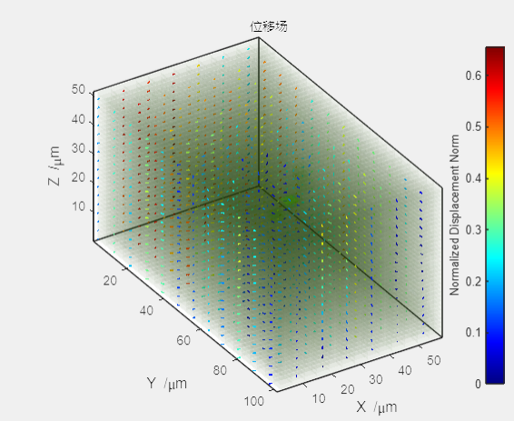
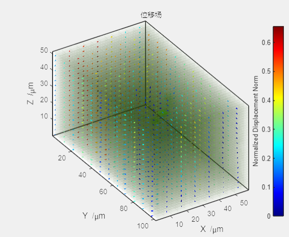

2.2.2 图像/位移场
 通过调整渲染器获得图像/位移场的最佳可视化效果，使用图像右上角小工具栏控制图像平移、旋转、缩放或导出。 注：Ver.1.3.1(白鲟, paddlefish) 版本之前不支持图像三维裁剪后展示位移场。

通过调整渲染器获得图像/位移场的最佳可视化效果，使用图像右上角小工具栏控制图像平移、旋转、缩放或导出。
注：Ver.1.3.1(白鲟, paddlefish) 版本之前不支持图像三维裁剪后展示位移场。